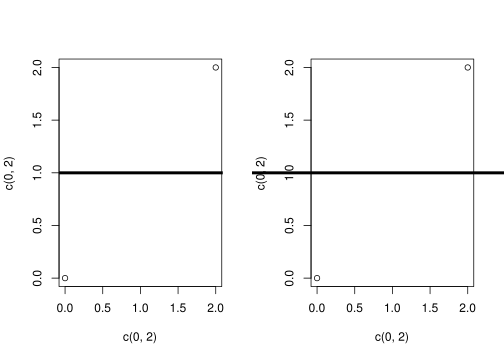

Kevin Cazelles David Beauchesne
apropos() functionA powerful way to look for a function you can barely remember the name of directly in R, i.e without googling!
apropos('Sys')
#R> [1] ".First.sys" "R_system_version" "sys.call"
#R> [4] "sys.calls" "Sys.chmod" "Sys.Date"
#R> [7] "sys.frame" "sys.frames" "sys.function"
#R> [10] "Sys.getenv" "Sys.getlocale" "Sys.getpid"
#R> [13] "Sys.glob" "Sys.info" "sys.load.image"
#R> [16] "Sys.localeconv" "sys.nframe" "sys.on.exit"
#R> [19] "sys.parent" "sys.parents" "Sys.readlink"
#R> [22] "sys.save.image" "Sys.setenv" "Sys.setFileTime"
#R> [25] "Sys.setlocale" "Sys.sleep" "sys.source"
#R> [28] "sys.status" "Sys.time" "Sys.timezone"
#R> [31] "Sys.umask" "Sys.unsetenv" "Sys.which"
#R> [34] "system" "system.file" "system.time"
#R> [37] "system2"You can also take advantage of regular expressions to narrow down you research:
apropos('^Sys')
#R> [1] "sys.call" "sys.calls" "Sys.chmod"
#R> [4] "Sys.Date" "sys.frame" "sys.frames"
#R> [7] "sys.function" "Sys.getenv" "Sys.getlocale"
#R> [10] "Sys.getpid" "Sys.glob" "Sys.info"
#R> [13] "sys.load.image" "Sys.localeconv" "sys.nframe"
#R> [16] "sys.on.exit" "sys.parent" "sys.parents"
#R> [19] "Sys.readlink" "sys.save.image" "Sys.setenv"
#R> [22] "Sys.setFileTime" "Sys.setlocale" "Sys.sleep"
#R> [25] "sys.source" "sys.status" "Sys.time"
#R> [28] "Sys.timezone" "Sys.umask" "Sys.unsetenv"
#R> [31] "Sys.which" "system" "system.file"
#R> [34] "system.time" "system2"Or even better:
apropos('^Sys.*time$', ignore.case = FALSE)
#R> [1] "Sys.time"table() functionOftentimes we wish to extract the frequency of certain elements in a dataset. There is a very useful function that allows us to achieve this quite efficiently: table(). Let’s see how this works:
df <- data.frame(data = sample(1:5, 20, replace = T))
table(df$data)
#R>
#R> 1 2 3 4 5
#R> 3 3 3 6 5You can also get the frequency for a data.frame with multiple columns. For example, if you observed species at a site throughout multiple years and wanted to know the frequency of observations per species per year:
df <- data.frame(observations = paste0('species', sample(1:5, 50, replace = T)),
year = sort(sample(2015:2018, 50, replace = T)))
table(df)
#R> year
#R> observations 2015 2016 2017 2018
#R> species1 2 2 2 3
#R> species2 4 2 0 1
#R> species3 3 3 3 3
#R> species4 0 6 1 4
#R> species5 2 2 3 4You can actually do so for more than two columns.
df$atr1 <- rep(c("val1", "val2"), each = 25)
tb <- table(df)
tb
#R> , , atr1 = val1
#R>
#R> year
#R> observations 2015 2016 2017 2018
#R> species1 2 2 0 0
#R> species2 4 2 0 0
#R> species3 3 3 0 0
#R> species4 0 5 0 0
#R> species5 2 2 0 0
#R>
#R> , , atr1 = val2
#R>
#R> year
#R> observations 2015 2016 2017 2018
#R> species1 0 0 2 3
#R> species2 0 0 0 1
#R> species3 0 0 3 3
#R> species4 0 1 1 4
#R> species5 0 0 3 4As you can see, in such case, you will have to deal with arrays:
tb[, , 1]
#R> year
#R> observations 2015 2016 2017 2018
#R> species1 2 2 0 0
#R> species2 4 2 0 0
#R> species3 3 3 0 0
#R> species4 0 5 0 0
#R> species5 2 2 0 0With further development and by combining table() with paste0() (see fish and tips 001 for an explanation of this useful function!), you can create your desired data.frame:
as.data.frame(table(paste0(df$year,'_',df$observations)))
#R> Var1 Freq
#R> 1 2015_species1 2
#R> 2 2015_species2 4
#R> 3 2015_species3 3
#R> 4 2015_species5 2
#R> 5 2016_species1 2
#R> 6 2016_species2 2
#R> 7 2016_species3 3
#R> 8 2016_species4 6
#R> 9 2016_species5 2
#R> 10 2017_species1 2
#R> 11 2017_species3 3
#R> 12 2017_species4 1
#R> 13 2017_species5 3
#R> 14 2018_species1 3
#R> 15 2018_species2 1
#R> 16 2018_species3 3
#R> 17 2018_species4 4
#R> 18 2018_species5 4This is a well-known trick for developers that may be useful for many beginners. In R when performing a logical test, every numeric is considered as TRUE but 0 (which is FALSE):
0 == FALSE
!0
!1
!7.45
#R> [1] TRUE
#R> [1] TRUE
#R> [1] FALSE
#R> [1] FALSEThis can actually be very helpful, for instance when we are testing whether or not a vector is empty!
vec0 <- 1:7
vec1 <- vec0[vec0>5]
vec2 <- vec0[vec0>7]
!(length(vec1))
!(length(vec2))
#R> [1] FALSE
#R> [1] TRUEexpand.grid() vs.combn()If you often create empty data.frame, you are very likely already familiar with the expand.grid() function:
expand.grid(LETTERS[1:4], LETTERS[5:6])
#R> Var1 Var2
#R> 1 A E
#R> 2 B E
#R> 3 C E
#R> 4 D E
#R> 5 A F
#R> 6 B F
#R> 7 C F
#R> 8 D FBut if you are looking for unique combinations (think about all combinations of games in a tournament of four team), you may feel that expand.grid() is not what you need:
expand.grid(LETTERS[1:4], LETTERS[1:4])
#R> Var1 Var2
#R> 1 A A
#R> 2 B A
#R> 3 C A
#R> 4 D A
#R> 5 A B
#R> 6 B B
#R> 7 C B
#R> 8 D B
#R> 9 A C
#R> 10 B C
#R> 11 C C
#R> 12 D C
#R> 13 A D
#R> 14 B D
#R> 15 C D
#R> 16 D DIn comes combn:
combn(LETTERS[1:5], 2)
#R> [,1] [,2] [,3] [,4] [,5] [,6] [,7] [,8] [,9] [,10]
#R> [1,] "A" "A" "A" "A" "B" "B" "B" "C" "C" "D"
#R> [2,] "B" "C" "D" "E" "C" "D" "E" "D" "E" "E"As you can see you need to specify the number of elements in the combination as combn can compute all combination
combn(LETTERS[1:5], 4)
#R> [,1] [,2] [,3] [,4] [,5]
#R> [1,] "A" "A" "A" "A" "B"
#R> [2,] "B" "B" "B" "C" "C"
#R> [3,] "C" "C" "D" "D" "D"
#R> [4,] "D" "E" "E" "E" "E"Also if you want a dataframe, a small extra step is required:
as.data.frame(t(combn(LETTERS[1:5], 2)))
#R> V1 V2
#R> 1 A B
#R> 2 A C
#R> 3 A D
#R> 4 A E
#R> 5 B C
#R> 6 B D
#R> 7 B E
#R> 8 C D
#R> 9 C E
#R> 10 D EIf you are always thinking outside the box you may want to learn how to plot something outside the margins! This is possible using the xpd parameter of the par() function.
par(mfrow = c(1, 2))
plot(c(0, 2), c(0, 2))
lines(c(-1,3), c(1,1), lwd = 4)
##
par(xpd = TRUE)
plot(c(0, 2), c(0, 2))
lines(c(-1,3), c(1,1), lwd = 4)